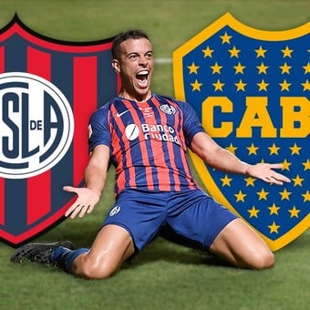

Noticias
El presidente cada vez mas lejos
El Presidente de San Lorenzo, Marcelo Tinelli expreso vias redes sociales que se tomara licencia, de su cargo como cabeza del ciclon, debido la demanda de tiempo que generan sus demas trabajos (Es eletco presidente de la Liga Profesion de Futbol "SAF" y conduce su reality show televisivo "La Academia"). Como era de esperarse, los hinchas no se hicieron esperar para mostrar su discomformidad con el actual presidente de San Lorenzo, sobre todo por la fragil situacion que vive el ciclon en el futbol masculino. Deudas, internas, juicios y derrotas son algunas de las cosas que Marcelo Hugo hoy no considera tan importantes como para hacerlas su prioridad.
